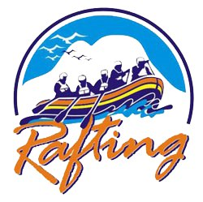
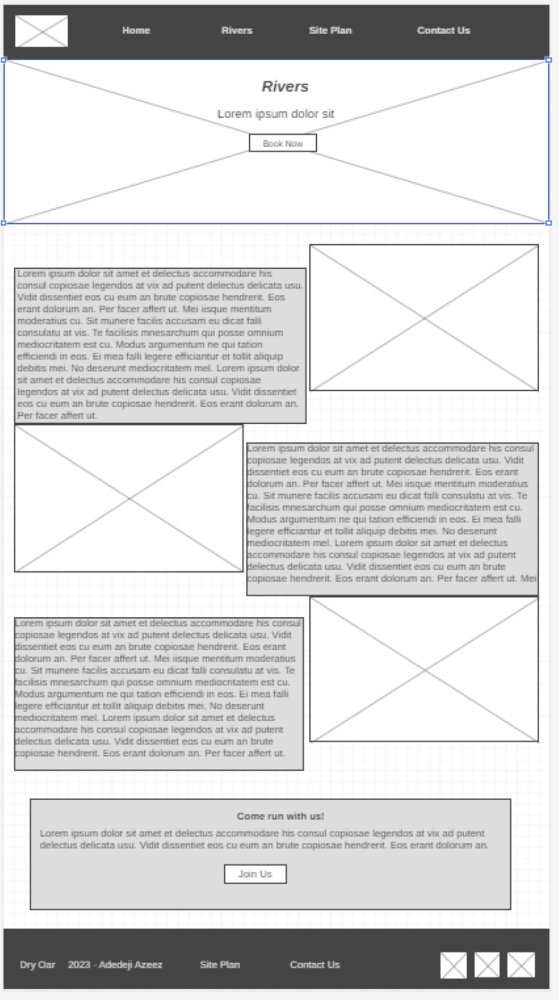
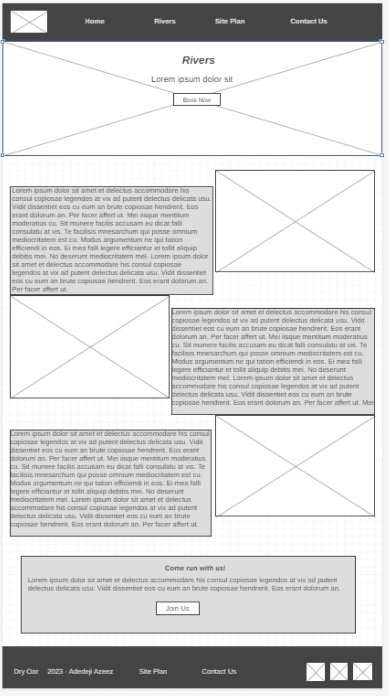

Overview
Purpose
Our website aims to promote and facilitate unforgettable white water rafting adventures for outdoor enthusiasts, families, and thril seekers.
We seek to provide a platform where individuals can discover, plan, and book thrilling rafting experiences that not only challenge their limits but also connec them with the beauty of nature.
Audience
Our target audience encompasses a wide raange ofbadventure seekers, including families, groups, and individuals, spanning various age groups. While our primary focus is on young adults aged 20 to 35, we also cater to families with children and adults aged 45 and older.
They seek thrilling white water rafting adventures that offer excitement, fun,and bonding opportunities. Families are looking for memorable vacations, young adults desire adventure and exploration, and older adults aim to relish nature and challenge themselves.
Our audience often struggles to find organized and family-friendly rafting experiences that cater to diverse skill levels. They need a one-stop platform that offers detailed information on trip options, safety protocols, and equipment suggesions, ensuring a secure and enjoyable experience.
By understanding and serving the varied preferences and needs of ourdiverse target audience, our website aims to become a go-to resource for anyone seeking an exciting white water rafting adventure, whether they are young adults, families, or older adventure enthusiasts.
Branding
Website Logo
Style Guide
Color Palette
https://coolors.co/39a9f9-c98107-e3b505-ffffff| Primary | Secondary | Accent 1 | Accent 2 |
|---|---|---|---|
| [#39a9f9] | [#c98107] | [#e3b505] | [#ffffff] |
Typography
Heading Font: [Roboto]
Paragraph Font: [Rock Salt]
Normal paragraph example
The best Whitewater Rafting in Colorado, White Water Rafting Company offers rafting on the Colorado and Roaring Fork Rivers in Glenwood Springs. Since 1974, we have been family owned and operated, rafting the Shoshone section of Glenwood Canyon and beyond.
Colored paragraph example
Trips vary from mild and great for families, to trips exclusively for physically fit and experienced rafters. No matter what type of river adventures you are seeking, White Water Rafting Company can make it happen for you.
Navigation
Site Map
Wireframes
Home
 Rivers

Rivers
